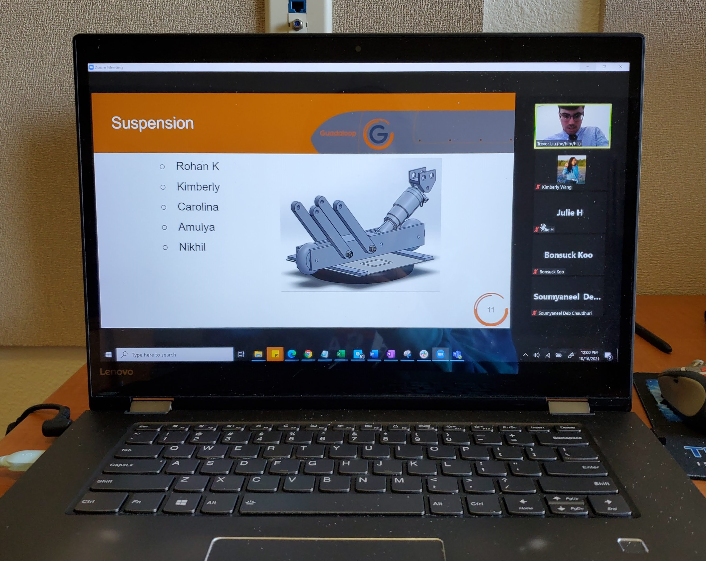
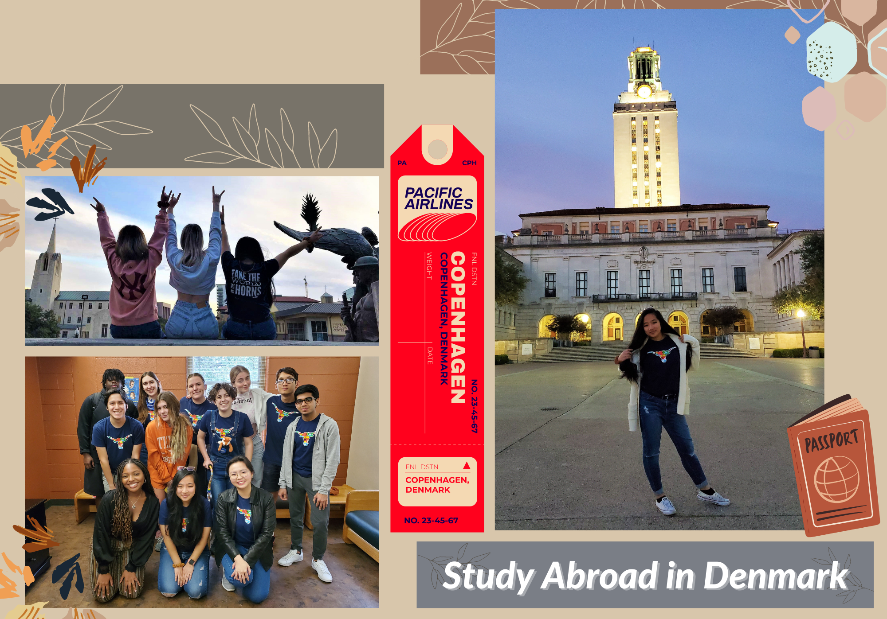

The Early Chapters
Where it all started — stepping out of my comfort zone at UT Austin, my first TA job, and a leap across the Atlantic to Denmark.
Where it all started — stepping out of my comfort zone at UT Austin, my first TA job, and a leap across the Atlantic to Denmark.

A semester that changed everything. I got out of my comfort zone, said yes to things that scared me, and started chasing what I thought was impossible. This is where the trajectory shifted.

I was accepted into an Advanced Nanotechnology & Innovation course in Copenhagen — one of just a handful of students chosen. Denmark opened a door I didn't know I needed, and everything that came after traces back to this trip.
My very first job as an undergraduate: Teaching Assistant for my favorite course in UT Austin's Department of Information, Risk, and Operations Management. It was the first time I realized I wanted to teach as much as I wanted to build.